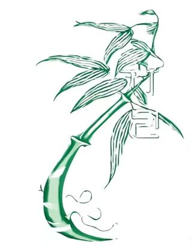

竹己介绍
非遗竹编文化

竹编是中华民族传承千年的传统手工技艺，以竹为材，将其剖削成篾片、篾丝，经巧妙编织制成实用器物与精美工艺品。早在新石器时代，先民就已掌握竹编技艺，历经商周、秦汉的发展，唐宋时期融入民俗，至明清走向鼎盛，技艺成熟、品类丰富。
竹编地域特色鲜明，遍布南方各地。按工艺精细程度，可分为以瓷胎竹编为代表的细丝竹编，其竹丝细如发丝，需经10余道工序编织，成品清雅秀丽；以及以竹篮、竹席为代表的粗丝竹编，侧重实用功能，广泛应用于日常生活与农业生产。从艺术形式看，编织、车花、拼花、穿珠、翻簧等技法，赋予竹编多样艺术风格。
制作竹编，需先对竹子进行选料、蒸煮、晾晒等处理，提升柔韧性与耐久性；编织时，根据器物造型，运用挑、压、插、穿等手法，将篾丝交织成纹样；最后通过锁口、缠边等工序完成收尾。这一过程不仅考验匠人对材料的驾驭能力，更体现其对造型与美感的把握。
竹编承载着“天人合一”的东方哲学，蕴含着匠人们对自然的敬畏与智慧，兼具实用价值与文化内涵，是中华传统文化的重要载体。2008年，竹编入选国家级非物质文化遗产名录。如今，在传承与创新中，竹编技艺不断焕发新生，既延续传统韵味，又融入现代设计，走向更广阔的舞台。